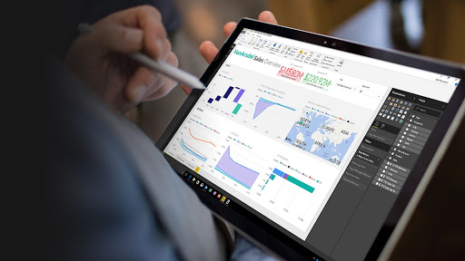
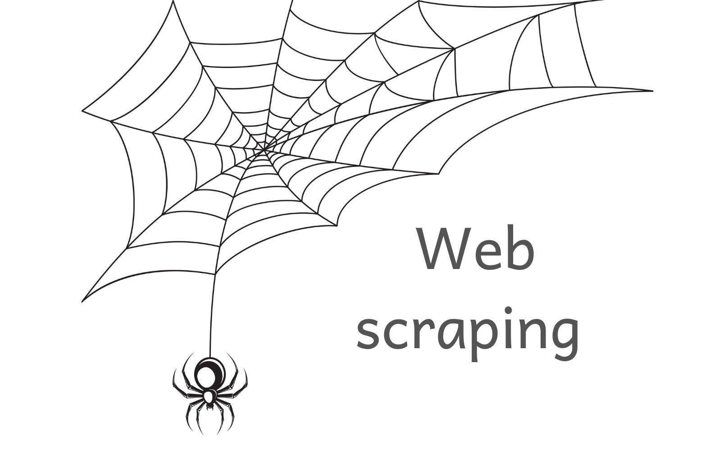

Machine Learning involves the use of Artificial Intelligence to permit machines to automatically learn and improve a task from experience
without programming them specifically about that task. This process starts with feeding them good quality data also called training data
and then training the machines by building various machine learning models using the data and different algorithms.
The choice of algorithms depends on what type of data we have and what kind of task we are performing to make predictions or decisions.
Below is a link to my github showing all the Machine learning projects
worked upon with the aid of different and necessary ML algorithms.


Creating Data Analysis projects in Python is essential for career development. It is the best way to learn new data analytics tools, practice the skills you have acquired, and demonstrate your competencies.Here,I have created projects around my true interests and also worked on topics that are understandable to others using various python libraries.This is a very diverse combination of projects spanning across various fields with well detailed explanation of all projects. Use the link to view them

In this project, I reviewed, analyzed, detected, modified, and removed.“dirty” data from a Housing Dataset to make it "clean" and available for further Exploration using SQL Server

All of us have been impacted by COVID-19 in one way or another.Looking at the daily case numbers,the basic reproduction number,or mortality rates has become a routine.But what is behind those numbers?In this project,I carried out an exploration using SQL Server.

Data has become a ubiquitous part of business today, making it essential for businesses to understand how to gain value from the wealth of raw data available to them. The right information must be gleaned from the data and presented VISUALLY for making well-informed business decisions.

Microsoft Excel is a must-have in your arsenal because it is one of the leading spreadsheet applications in the business world. In addition to presenting data, Excel is used to analyze data sets, create charts, and produce graphs for analysis. If a potential employer sees you know your way around Excel, they may feel confident that you know how to organize, execute, and present your analyses.

Let us suppose you want to get some information from a website? Let us say an article from the wikipedia website or some news article, what will you do? The first thing that may come in your mind is to copy and paste the information into your local media. But what if you want a large amount of data on a daily basis and as quickly as possible. In such situations, copy and paste will not work and that is where you will need webscraping. In this project,I built a webscraper with the aid of Request and BeautifulSoup.